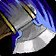
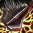
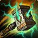
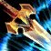
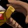

武器战士 PvP 判断训练器
这个专精在队里的活，是让对面的治疗算不过账。

而且战士的爆发是明牌——对面看见你交
该不该开？勾一下就知道
勾掉几条，就有多少胜算。
三个时钟
武器战士的节奏全挂在这三个数字上。
35% 增伤、持续 10 秒。窗口从按下的那一刻开始计时，后面每个公共冷却都得落在里面。
所以顺序永远是：增伤先开，伤害后跟。反过来打，这一轮少三分之一。


控制时钟 · 卡在伤害落地那一刻不要开场就交▸控制要卡在治疗准备抬手的那一秒，不是卡在你刚进场的时候。开场交掉，等于把窗口里最关键的一手提前浪费。
本版定盘（top50 三对三实测）
Slayer（29/50 · 58%）vs Colossus（21/50 · 42%）。
另外四个已上线专精的英雄天赋都是一边倒（敏锐贼 50/0、狂徒贼 50/0、冰法 50/0、戒律牧 42/8），武器战士是唯一一个 top50 内部也没共识的。这意味着数据不给你答案——选择依据是你的打法节奏和常遇到的阵容。

PvP 天赋：三格四个候选打磨利刃 98% 必带 · 另两格看阵容▸四项占全部选择的 95%。50 人 × 3 格 = 150，实测总和正好 150。